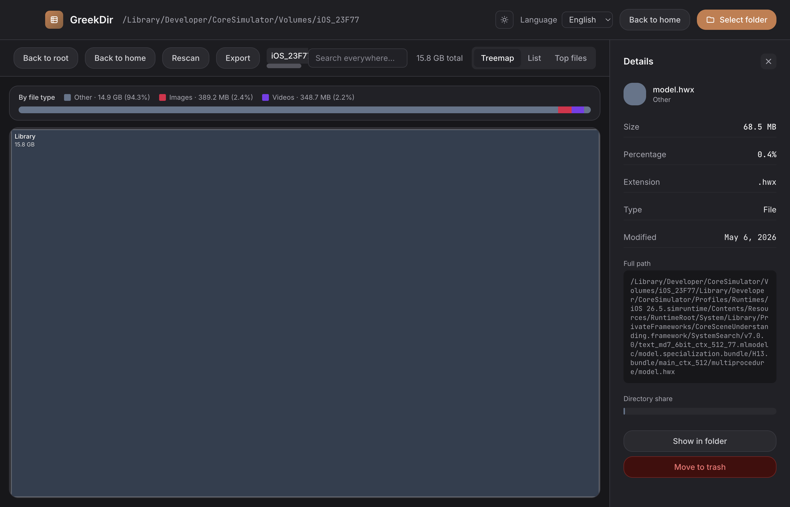
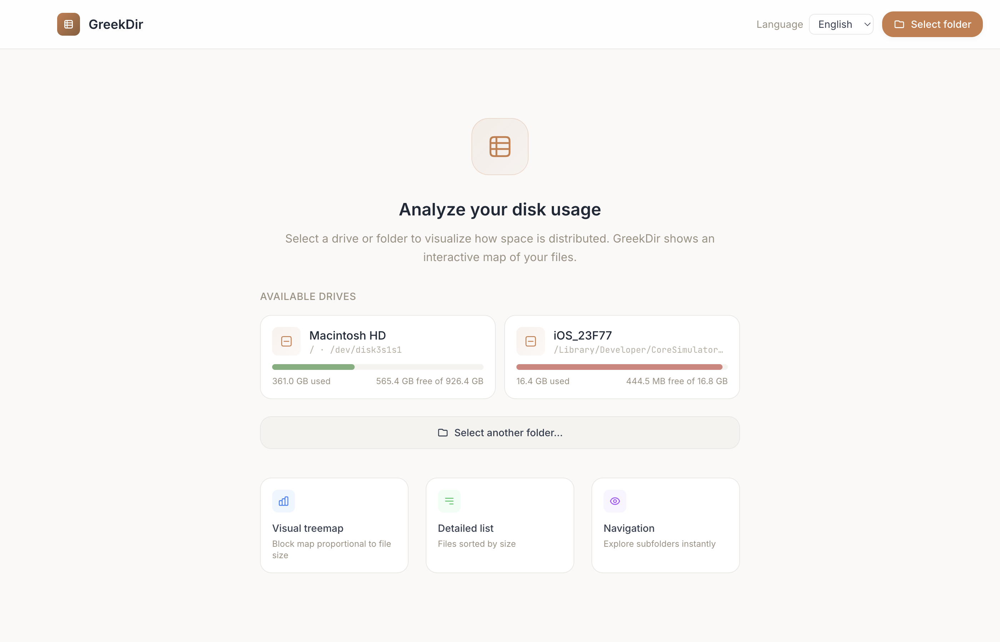

GreekDir muestra un mapa interactivo de tus archivos y carpetas. Encuentra lo pesado, entiende a dónde se fue el espacio y libéralo en segundos.
GreekDir shows an interactive map of your files and folders. Find the heavy stuff, understand where the space went, and free it in seconds.
Gratis y de código abierto · macOS 11+ (Intel y Apple Silicon) · Windows 10/11
Free and open source · macOS 11+ (Intel & Apple Silicon) · Windows 10/11


Mapa de bloques proporcional al tamaño. Haz clic para navegar entre carpetas.
Block map proportional to size. Click to drill into folders.
Los 100 archivos más grandes de todo el escaneo, listos para actuar.
The 100 largest files across the whole scan, ready for action.
Busca por nombre en todo el disco escaneado, al instante.
Search by name across the entire scan, instantly.
Muestra en Finder/Explorer o mueve a la papelera sin salir de la app.
Reveal in Finder/Explorer or move to trash without leaving the app.
Cuánto ocupan imágenes, videos, código o documentos en cada carpeta.
How much images, videos, code or documents take in each folder.
Claro u oscuro, en español o inglés. Tus preferencias se recuerdan.
Light or dark, English or Spanish. Your preferences are remembered.
GreekDir analiza tu disco localmente. No recolecta datos, no requiere cuenta y no se conecta a internet. GreekDir analyzes your disk locally. It collects no data, needs no account, and never talks to the internet.